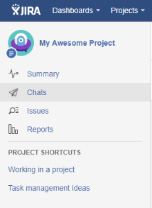
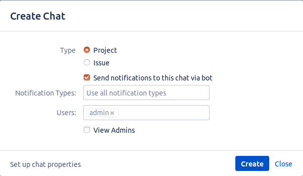
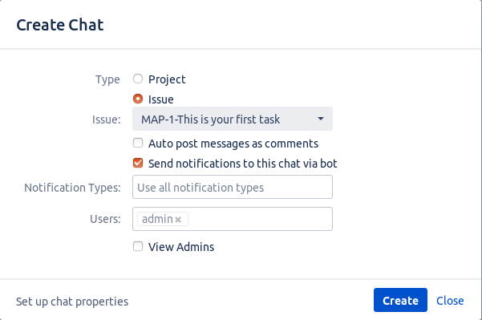
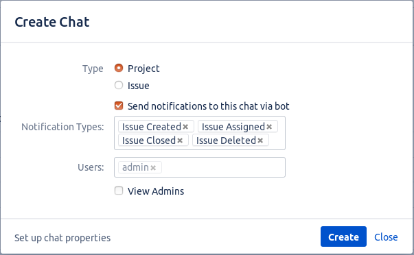
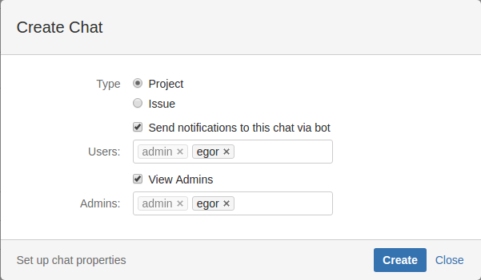
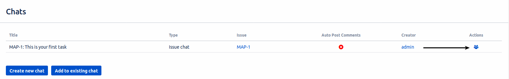
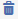

User guide. Part II. Chats
If you are logged in to your Telegram Integration, let's create chats!:
Create Chat
Open one of your projects you want to start with.
You'll see a new tab "Chats" in project section.

This section contains list of your chats for this project. Click the "Create new chat" button.
Below you can see a set of checkboxes (Bot notifications options), that allows you to set a default
value of "Send notifications to this chat via bot" checkbox in the create chat dialog for chats on this project.


In this window you can choose, is this chat for all project, or only for specified issue.
You can have only one chat for each project, and one chat for each issue.
Choose type and add users to your chat. In the "Users" field your name is disabled because you are creator of
this chat, you can't create a chat and not be its participant. "Send notifications to this chat via bot" checkbox allows you to
receive related notifications from Bot right in this chat.
Note: If the user you added does not register in the Telegram Integration, he will be ignored.
If you choose issue chat, you'll see the option "Auto post messages as comments".
Enabling this option means that every message from this chat will be posted in comments for this issue.

Another option is notification types select, that determines on which events bot must send notifications to this chat.

You can also give some users administrative privileges.
Admins can delete this chat from Jira, add and remove users , but they can't manage other admins, or chat
creator.

Click "Create" to create a chat in Telegram.
Created chat appears in chat table. Now check your Telegram!
In created chat you can see members you added and Telegram bot.
Do not delete bot from chat! It post comments in JIRA and manage chat participants.
If chat or specified task will be deleted from Jira, Bot leaves chat.
Also you can create and edit chat for issue directly from Issue View.
Edit Chat
Editing the chat is identical to the features described in the chat creation section.
Click on the icon to edit a chat.

In this window you can edit chat members and admins.
If you don't need this chat anymore, you can delete it by clicking on
 button.
Note: If you delete this chat, it will be not available in Jira but it still stays in Telegram app.
Logged in chat users also can view this window but they can't edit anything
Connect issue or project with existing chat
First of all, you should add bot to the chat, which you want to connect with JIRA. Bot will send the connection key.
Then go to the issue, to which you want to connect chat, or to the Chats section and click Add to existing chat button.
Then you will see modal window with Connection key field, where you should paste key, sent by bot.
Note: This option is available for admin and users, who have connected their Telegram accounts with jira by sending /start
command to bot (full authentication with code and password is required only for editing connected chats).